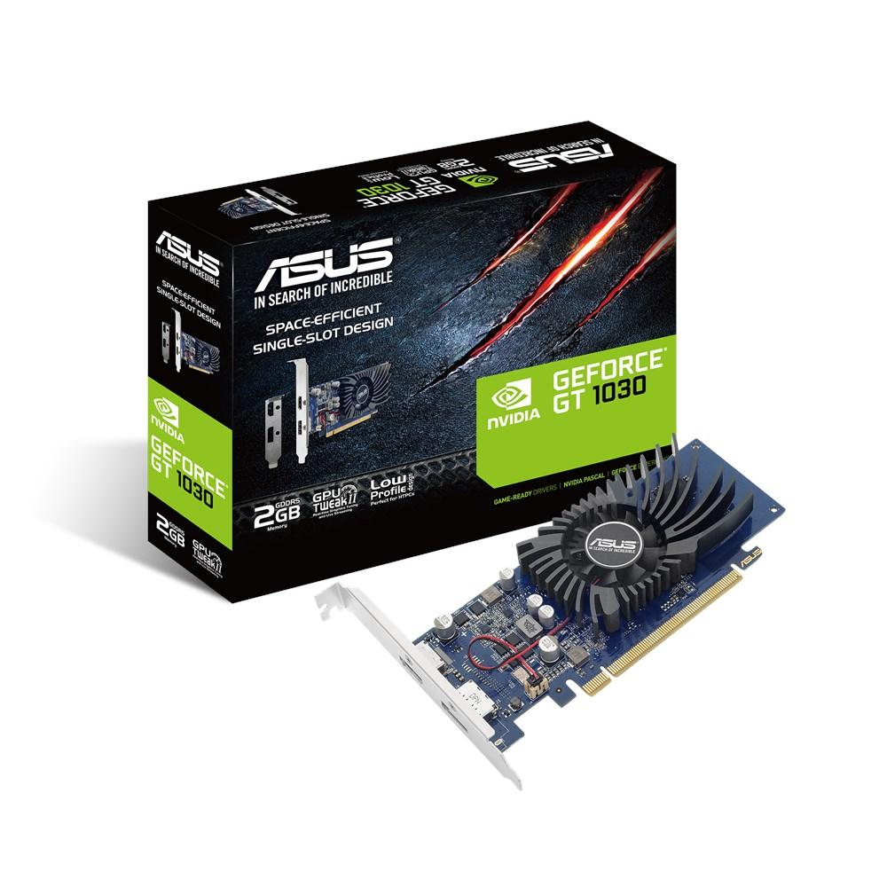
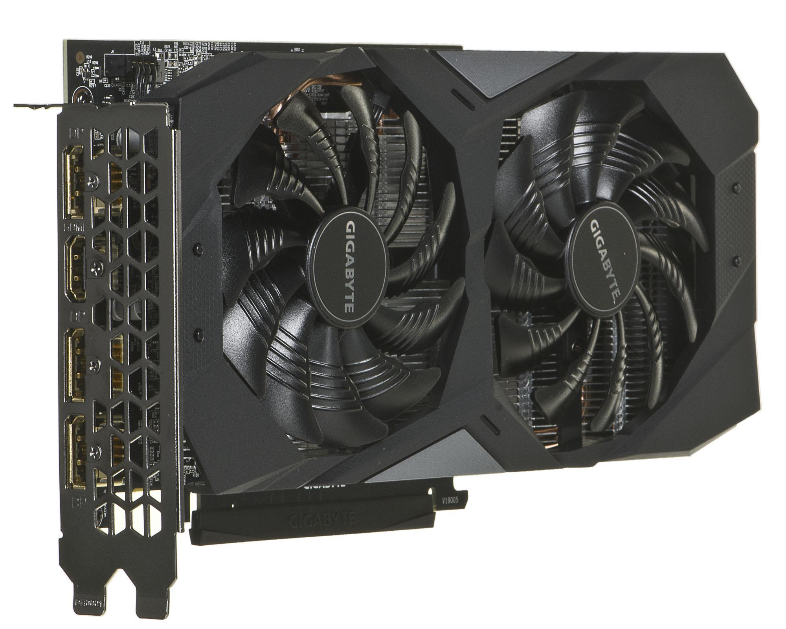

10 geriausių kompiuterio grafikos plokštės 2018 m - Žmonių pasirinkimas 2020
2020.10.29 12:41
Labai gilus nardymas Gerai vaikams Ką aš negaliu gyventi be Prekių sąrašas Langų apsipirkimas Žmonių pasirinkimas
Geriausios kompiuterinės grafikos kortelės Amazon , pasak Hyperenthusiastic Reviewers
2020-10-29Čia, mums patinka galvoti apie save kaip į progą (geru būdu) apie tai, ką mes perkame (kaip pagalvės ), bet kiek mes norėtume, negalime išbandyti visko. Štai kodėl mes turime Žmonių pasirinkimą , kuriame randame geriausiai peržiūrėtus (tai yra keturių-penkių žvaigždučių atsiliepimai ir daugybė jų) produktų ir išskirti labiausiai įtikinamą. Nors anksčiau mes parašėme apie kitus technologijų priedus, tokius kaip kompiuteriniai monitoriai , išoriniai kietieji diskai ir ekspertų rekomenduojamos ergonominės klaviatūros ir pelės , čia mes nuveikėme giliai pasinerti į kompiuterio grafikos plokštę ir suapvalinome geriausius Amazon . (Atkreipkite dėmesį, kad atsiliepimai buvo redaguojami dėl ilgio ir aiškumo.)
Geriausios vaizdo plokštės mažesnėmis nei 200 USD
EVGA GeForce GTX 1050 2GB grafinė plokštė
4, 7 žvaigždutės, 1 719 atsiliepimai
Ši kortelė jau turėjau apie mėnesį. Jis patenkino visus mano lūkesčius, atsižvelgiant į jo kainą. Mano anūkai mėgsta žaisti žaidimus savo kompiuteryje, todėl norėjau kažko, kuris turėjo bent jau minimalų žaidimo pajėgumą. Anūkai nepateikė skundų dėl savo pasirodymų ir, manau, jie nesigaili skundžiasi.
Gigabyte GeForce GTX 1050 2GB grafinė plokštė
4, 4 žvaigždutės, 907 atsiliepimai
Tai buvo mano pirmoji grafikos plokštė kada nors, ir nuoširdžiai, kad žaidimų, kuriuos galiu žaisti tokioje spalvingoje kokybėje, skaičius mane visiškai gąsdina. Nors aš turėjau profesionalo, įdiegk jį man, daugelis mano draugų, kurie turi tą pačią grafinę plokštę, patys įdiegė juos ir turėjo keletą problemų. Tai nuostabi vaizdo plokštė už kainą, ir aš rekomenduoju ją visiems ir visiems, kurie ieško mažesnės biudžeto grafikos plokštės, kuri vis tiek gali puikiai paleisti žaidimus.
Geriausios vaizdo plokštės, kurių kaina neviršija 100 USD
EVGA 1GB GeForce 8400 vaizdo plokštė
4, 2 žvaigždutės, 1 913 atsiliepimai
Puiki vaizdo plokštė, skirta palaikyti kelis monitorius verslo aplinkoje arba šiek tiek lengviems žaidimams. Tai nesudarys jokių nesąžiningų rėmų, taikomų naujausiuose grafikos intensyviuose žaidimuose, tačiau, jei jūs perkate jį tinkamai, jums nebus nusivylęs. Tai puikiai veikia, ir aš negalėjau būti laimingesni. Ar turi visas standartines vaizdo išvesties parinktis - nėra rodomo prievado, bet dar kartą tai yra 1 GB kortelė ir ji nėra skirta našumo riboms stumti.
MSI ATI Radeon HD6450 1GB vaizdo plokštė
4, 1 žvaigždutės, 872 atsiliepimai
Pirkiau šią kortelę darbui, o ne lošimui, kad galėčiau naudoti du ekranus viename iš mano kolegų darbo stalo. Įdiegus vairuotoją, kortelė dirbo nepriekaištingai. Mano bendradarbis buvo patenkintas sąranka. Rekomenduojama įsigyti darbalaukio biudžeto naujinimą. Vis dėlto aš nesu rekomenduoju tai žaisti esamus žaidimus, nes manau, kad jis net atsiliks net esant žemiems nustatymams. Tačiau, kaip sakiau, ji buvo naudojama darbui, ir mes neturėjome jokių problemų, susijusių su vaizdo įrašų atkūrimu, vaizdo konferencija, interneto naršymu ir tt
Geriausios vaizdo plokštės virtualios realybės
MSI žaidimų GeForce GTX 1070 Armor 8GB vaizdo plokštė
4, 6 žvaigždutės, 597 atsiliepimai
Puiki kortelė, puikiai valdė mano Oculus VR programas ir visą mano Steam žaidimų rinkinį. Beveik tylus ir kietas bėgimas. Tai puikus sprendimas tiems žaidėjams, kurie turi tuos Titan svajones, bet yra Top Ramen biudžete. Labai gražus, geriausiai veikiantis vidurio kelias .
ASUS Dual GeForce GTX 1070 8GB kompiuterio grafikos plokštė
4, 6 žvaigždutės, 718 apžvalgų
Amazing, dirba nepriekaištingai. Įsigijote jį visų pirma Oculus Rift , bet tai puiki kortelė žaidimams apskritai. Aš buvau susirūpinęs, kad norėčiau, kad 1080 būtų vientisos VR patirties, bet niekas negali būti toli nuo tiesos. Aš naudoju šį ir Rift maždaug mėnesį ir patyriau nulinės atsilikimo ar našumo problemas, nes viskas buvo išnaudota.
Geriausios vaizdo žaidimų korteles
ASUS Strix RX Vega 8GB žaidimų grafikos plokštė
4.2 žvaigždės, 392 apžvalgos
Šis GPU yra nuostabus. Labai, labai greitai, o kūrimo kokybė tiesiog nuostabi. Naudodamas FreeSync monitorių, dabar galiu mėgautis labai sklandžiu žaidimu ir daug mažiau nei Nvidia partnerio. Šis ASUS GPU yra tik kokybė! Viskas apie tai yra nuostabus. Vienintelis neigiamas dalykas, kurį galiu duoti, yra tai, kad kai gerbėjai sukasi, tai šiek tiek triukšmingas, bet viską galite nustatyti su ASUS programine įranga, todėl jis nebus per daug garsus. Man, triukšmo lygis yra priimtinas.
Gigabyte GeForce GTX 1080 G1 žaidimų 8G grafinė plokštė
4, 2 žvaigždutės, 549 atsiliepimai
Tai yra geriausia / stipriausia vaizdo plokštė, kurią kada nors turėjau. Aš ketinu apsistoti 1070 arba 980ti, bet draugas mane įtikino sutaupyti šiek tiek daugiau ir pasilikti už geresnę kortelę. Džiaugiuosi, kad klausiau. Ši kortelė bus mano kūrime ilgą laiką.
MSI žaidimų GeFroce GTX 1080 11 GB grafinė plokštė
4, 4 žvaigždutės, 187 atsiliepimai
Viskas, ką galiu pasakyti, yra tai, kad ši kortelė buvo gerai išleista. Kiekvienas žaidimas, kurį aš vykdiau iki šiol, bėgo kaip sviestas aukščiausių nustatymų. Ši kortelė veikia ramiai ir kietai. Iš tikrųjų aš iš tikrųjų buvo susirūpinęs dėl to, kad gerbėjai nesisuktų, nebent kortelė pasiektų tam tikrą temperatūrą, kuri savaime yra nuostabi. MSI yra nuostabi kompanija, ir aš suprantu, kodėl jie tam tikrose kategorijose yra pasaulio lyderiai. Jei galėsite gauti šią kortelę, gaukite ją. Jūs nebūsite nusivylę.
Geriausia vaizdo plokštė, skirta HD vaizdo įrašams žiūrėti
ZOTAC GeForce GT 730 Zone Edition 4 GB grafikos plokštė
4, 1 žvaigždutės, 232 atsiliepimai
Ši kortelė atrodo gana greita. Laimingas su juo iki šiol. Aš naudoju tik filmus. Aš nesu žaidėjas. Tačiau kaina buvo gera ir našumas buvo geras, ir man labai patinka tai, kad jis nesudaro triukšmo, nes mano kompiuteryje jau yra garsiai.
Populiarios Temos
Vaistinė Candy iš viso pasaulio (kurią galite nusipirkti Amazon )
Tai sudėtinga: vandens buteliai
Gruodžio: Populiariausi Žaliosios Stilius Žinutės
Populiarios Temos
Goodnight Green
Garden Pod Archipod
Ši linksma, žvilgsniai 10 litų žvakė paversdavo mano veterinarijos tarnybą dienos vonelėje
Kaip išvalyti makiažo teptukus, pasak ekspertų
Žalioji stilius: Skandinavijos akmens laivas
Redaktoriaus Pasirinkimas
Žalioji idėja: bendruomenės įrankiai Žalioji idėja: nuoma Daugybė daiktų iš Tom Dixon's naujausios kolekcijos yra parduoti šiandienRedaktoriaus Pasirinkimas
Tweet-a-Watt: Twittering Jūsų namų energijos vartojimas
Tiesiog tada, kai mes pagaliau suaktyvėjome Twitter pakabą ir tuo pačiu metu, atsižvelgdami į vieną iš šių Kill-a-Watt dalykėlių, kažkas eina ir šliudo abu kartu. Ir, nors tai yra techniškai per mūsų galvas, mes vis dar manome, kad tai puiki idėja. Kodėl norėtumėte turėti Kill-a-Wat , kuris bevieliu būdu paskelbtų žiniatinkliui naudojamą namų energiją? Na, tu gali ne. Bet jei e
Populiarios Temos
Bailout Bill: dviračių važtaraščio aktas
Nuo sausio 1 d. Darbdaviai gali atskaityti iki 20 dolerių per mėnesį dalyvaujantiems darbuotojams, kurie reguliariai važiuos į darbą, įskaitant dviračių pirkimo, tobulinimo, remonto ir saugojimo išlaidas
Ši Stan Smith rožinė pora yra 30 procentų išjungta
Šiandienos dienos sandoriai yra pora Adidas Stan Smiths, kurie parduodami 30 procentų. Jie saldūs, bet ne saldūs.
Populiarios Kategorijos
Paklausk Paprašykite technikos specialisto Vonios aksesuarai Geriausias statymas Geriausi statymai Geriausia dovana, kurią aš kada nors daviau Esque Carafe rinkinys: malonumas žalia Martha gauna modulinį dujų katilo perdarymą Kolorado namai, pastatyti amžiams Receptas: Kale ChipsGeriausi Prekės Į Namus - Reitingai, Straipsniai, Apžvalgos © 2020.
- Kas yra integruota grafikos plokštė?
- Skirtumas tarp atskiros ir integruotos grafikos kortelės ...
- grafikos plokštės
- Vaizdo Plokštės GeForce, Radeon. Vaizdo Plokste Internetu ...
- NAUJOS GRAFIKOS PLOKŠTĖS ĮDIEGIMAS! - ŽAIDIMAI(2020)
- Grafikos plokštę "HD 7970: techninė harakterisitki ir ...
- Vga grafikos plokštės aprašymas - Įranga - 2020
- 10 geriausių kompiuterio grafikos plokštės 2018 m - Žmonių ...
- Kaip sužinoti, kokią grafikos plokštę turiu? („Windows 10 ...
- Grafikos kortelių reitingas - palyginimų sąrašas 2020
- Kas yra integruota grafikos plokštė?
Papildomi būdai sužinoti, kuri grafikos plokštė naudoja „Windows“ Be jau aprašytų metodų, „Windows 10“, „8“ ir „Windows 7“ yra papildomi sistemos įrankiai, leidžiantys gauti informaciją apie vaizdo plokštės modelį ir gamintoją, kuris kai kuriais atvejais gali būti naudingas (pvz., Jei administratoriui neleidžiama ...
- Skirtumas tarp atskiros ir integruotos grafikos kortelės ...
Pavyzdžiui, integruota "Intel" grafikos plokštė sunaudoja ne daugiau kaip 15 vatų. Todėl temperatūros režimas yra švelnesnis - galite sumažinti triukšmingų ventiliatorių skaičių sistemos vienete. Trečia, linijų skaičius ir ilgis mažėjaSistemos autobusas naudojamas bendrauti su kortele, todėl galite gauti aiškesnį vaizdą ...
- grafikos plokštės
Žinant, kokią grafinę plokštę turite kompiuteryje su „Windows 10“, labai svarbu, nes per šią informaciją galite atsisiųsti, įdiegti ir atnaujinti reikalingus tvarkykles. Grafinė kortelė, vaizdo plokštė arba vaizdo plokštė yra pagrindinė ir esminė kompiuterio sudedamoji dalis, nes ji yra atsakinga už visų kompiuterio ir visų jį valdančių programų grafinių (ty ...
- Vaizdo Plokštės GeForce, Radeon. Vaizdo Plokste Internetu ...
Norint pakeisti grafikos plokštę, pirmiausia reikės atidaryti kompiuterio dėžę, išimti senąją ir įdėti naują plokštę. Tačiau prieš įsigyjant naują techninę įrangą labai svarbu žinoti, ar Tavo kompiuteryje yra naudojama „PCI Express“ grafikos plokštė, ar senesnė AGP.
- NAUJOS GRAFIKOS PLOKŠTĖS ĮDIEGIMAS! - ŽAIDIMAI(2020)
Kokia žaidimų vaizdo plokštė? Gera vaizdo plokštė 616 peržiūros Patugali atsakė į klausimą Birželio 24 2020 Pramogos ir laisvas laikas žaisti žaidimų kortelė Grafika kortelė grafikos plokštės kompiuterio surinkimas
- Grafikos plokštę "HD 7970: techninė harakterisitki ir ...
PC grafikos kortelės; Grafikos kortelių reitingas. Grafikas, kuriame lyginamos geriausių kompiuterio grafikos plokščių charakteristikos. Naujausia „Gforce“, „RX Radeon GPU“ greitis, palyginti su reitingu. Sužinokite, kuri darbalaukio vaizdo plokštė yra greičiausia. 2020-01-31
- Vga grafikos plokštės aprašymas - Įranga - 2020
HD vaizdo plokštė 7970 GHz Edition "buvo parduoti forma distiliuoto nuo: grafikos branduolys veikia esant 1050 MHz dažniu, o vaizdo atmintis 1500 MHz (6000 MHz). Verta pažymėti, kad gamintojas yra įvesta daugiau jokių pokyčių: tikimasi padidinti pajėgumus daugiau nei 384 bitai, ir padidinti atminties talpą iki 6 GB atsitiko.
- 10 geriausių kompiuterio grafikos plokštės 2018 m - Žmonių ...
Specialiosios ir integruotos grafikos kortelės yra dviejų tipų grafikos plokštės. Pagrindinis skirtumas tarp dviejų yra tas, kad integruota grafikos plokštė yra įmontuota į kompiuterį. Kadangi speciali grafinė plokštė yra išorinis priedas, kuris turi būti prijungtas prie pagrindinės plokštės.
- Kaip sužinoti, kokią grafikos plokštę turiu? („Windows 10 ...
Gigabyte GeForce GTX 1050 2GB grafinė plokštė 4, 4 žvaigždutės, 907 atsiliepimai "Tai buvo mano pirmoji grafikos plokštė kada nors, ir nuoširdžiai, kad žaidimų, kuriuos galiu žaisti tokioje spalvingoje kokybėje, skaičius mane visiškai gąsdina.
- Grafikos kortelių reitingas - palyginimų sąrašas 2020
Pradinio lygio vaizdo plokštė su geromis techninėmis specifikacijomis ir labai demokratiškomis sąnaudomis yra NVidia GeForce GT 610. Šio gaminio, jo parametrų ir galimybių ypatumai bus išsamiau nagrinėjami.
Papildomi būdai sužinoti, kuri grafikos plokštė naudoja „Windows“ Be jau aprašytų metodų, „Windows 10“, „8“ ir „Windows 7“ yra papildomi sistemos įrankiai, leidžiantys gauti informaciją apie vaizdo plokštės modelį ir gamintoją, kuris kai kuriais atvejais gali būti naudingas (pvz., Jei administratoriui neleidžiama ...
Pavyzdžiui, integruota "Intel" grafikos plokštė sunaudoja ne daugiau kaip 15 vatų. Todėl temperatūros režimas yra švelnesnis - galite sumažinti triukšmingų ventiliatorių skaičių sistemos vienete. Trečia, linijų skaičius ir ilgis mažėjaSistemos autobusas naudojamas bendrauti su kortele, todėl galite gauti aiškesnį vaizdą ...
Žinant, kokią grafinę plokštę turite kompiuteryje su „Windows 10“, labai svarbu, nes per šią informaciją galite atsisiųsti, įdiegti ir atnaujinti reikalingus tvarkykles. Grafinė kortelė, vaizdo plokštė arba vaizdo plokštė yra pagrindinė ir esminė kompiuterio sudedamoji dalis, nes ji yra atsakinga už visų kompiuterio ir visų jį valdančių programų grafinių (ty ...
Norint pakeisti grafikos plokštę, pirmiausia reikės atidaryti kompiuterio dėžę, išimti senąją ir įdėti naują plokštę. Tačiau prieš įsigyjant naują techninę įrangą labai svarbu žinoti, ar Tavo kompiuteryje yra naudojama „PCI Express“ grafikos plokštė, ar senesnė AGP.
Kokia žaidimų vaizdo plokštė? Gera vaizdo plokštė 616 peržiūros Patugali atsakė į klausimą Birželio 24 2020 Pramogos ir laisvas laikas žaisti žaidimų kortelė Grafika kortelė grafikos plokštės kompiuterio surinkimas
PC grafikos kortelės; Grafikos kortelių reitingas. Grafikas, kuriame lyginamos geriausių kompiuterio grafikos plokščių charakteristikos. Naujausia „Gforce“, „RX Radeon GPU“ greitis, palyginti su reitingu. Sužinokite, kuri darbalaukio vaizdo plokštė yra greičiausia. 2020-01-31
HD vaizdo plokštė 7970 GHz Edition "buvo parduoti forma distiliuoto nuo: grafikos branduolys veikia esant 1050 MHz dažniu, o vaizdo atmintis 1500 MHz (6000 MHz). Verta pažymėti, kad gamintojas yra įvesta daugiau jokių pokyčių: tikimasi padidinti pajėgumus daugiau nei 384 bitai, ir padidinti atminties talpą iki 6 GB atsitiko.
Specialiosios ir integruotos grafikos kortelės yra dviejų tipų grafikos plokštės. Pagrindinis skirtumas tarp dviejų yra tas, kad integruota grafikos plokštė yra įmontuota į kompiuterį. Kadangi speciali grafinė plokštė yra išorinis priedas, kuris turi būti prijungtas prie pagrindinės plokštės.
Gigabyte GeForce GTX 1050 2GB grafinė plokštė 4, 4 žvaigždutės, 907 atsiliepimai "Tai buvo mano pirmoji grafikos plokštė kada nors, ir nuoširdžiai, kad žaidimų, kuriuos galiu žaisti tokioje spalvingoje kokybėje, skaičius mane visiškai gąsdina.
Pradinio lygio vaizdo plokštė su geromis techninėmis specifikacijomis ir labai demokratiškomis sąnaudomis yra NVidia GeForce GT 610. Šio gaminio, jo parametrų ir galimybių ypatumai bus išsamiau nagrinėjami.
 